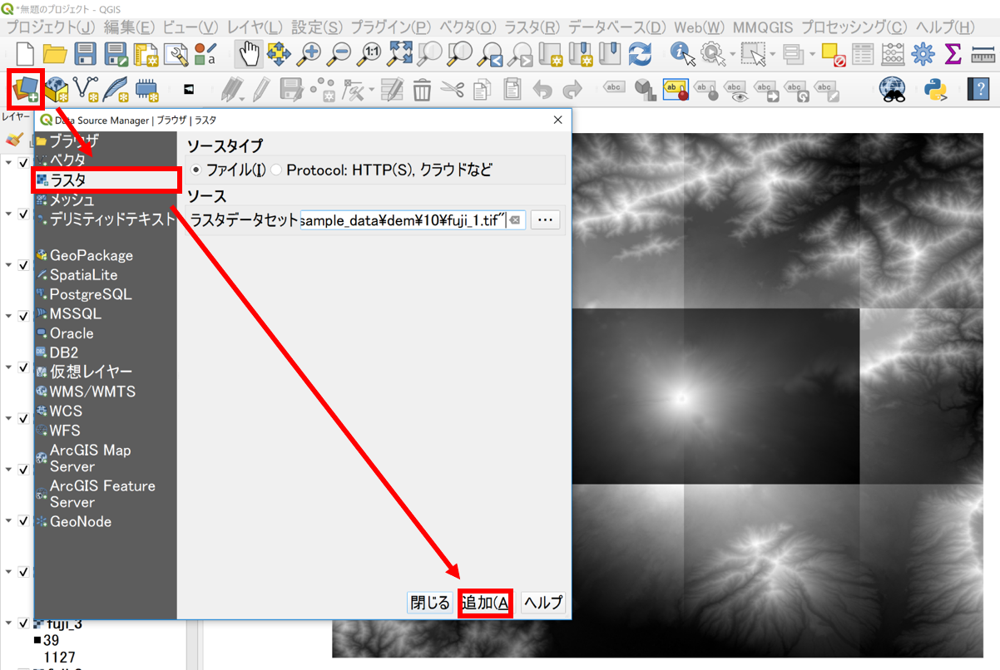
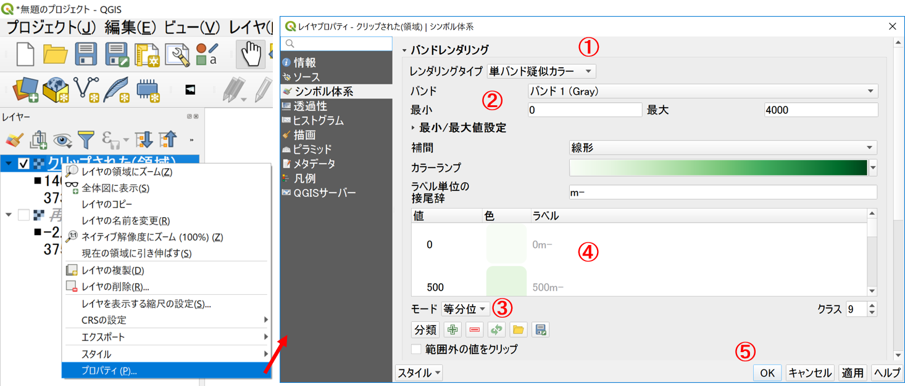
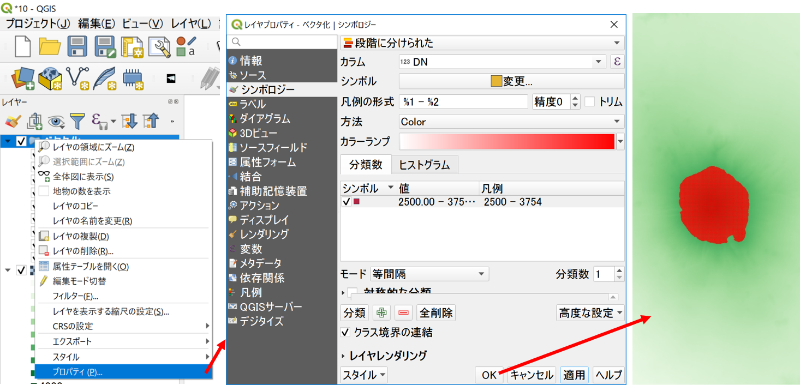
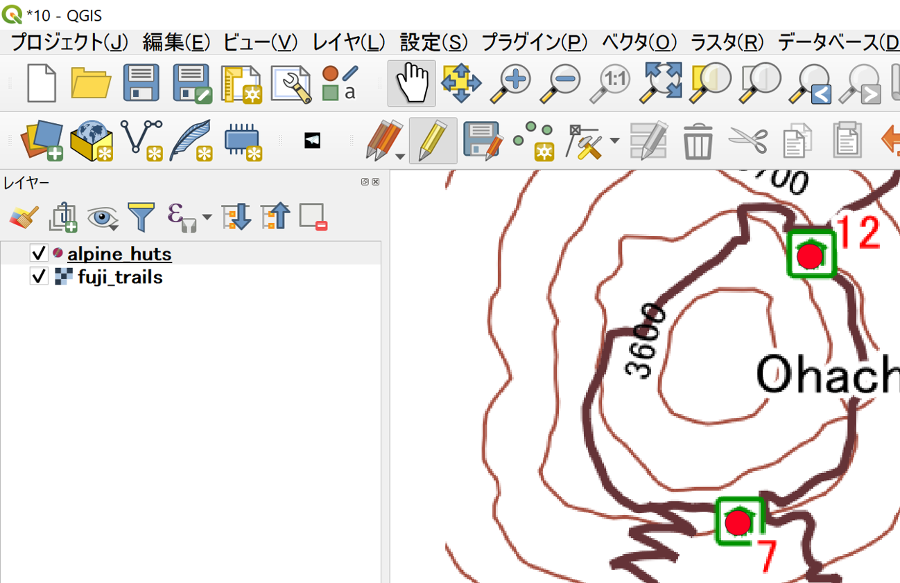
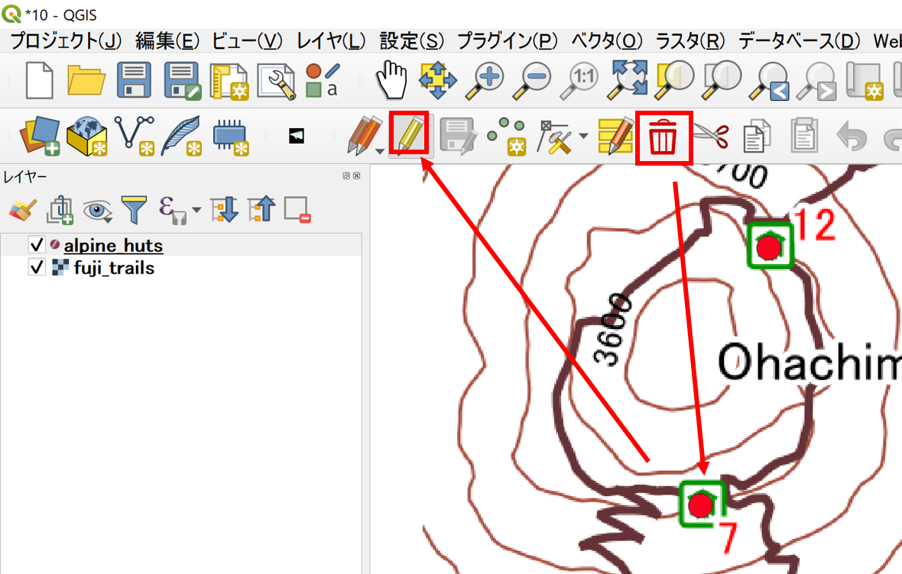
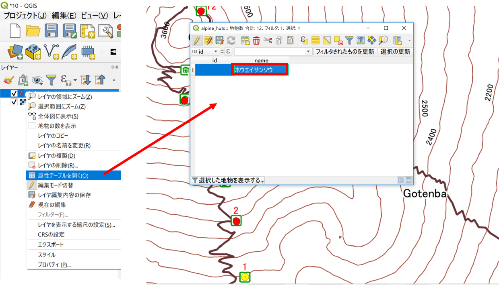
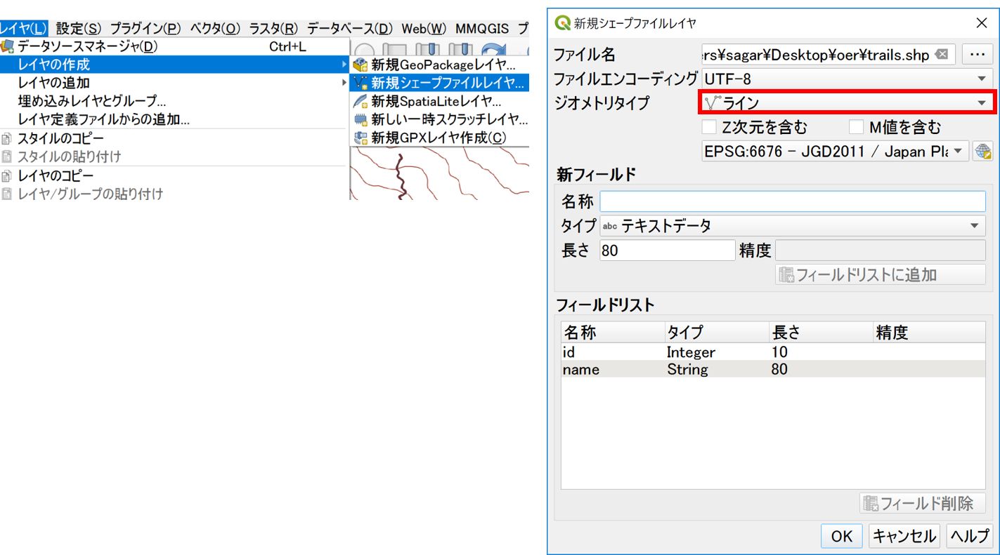
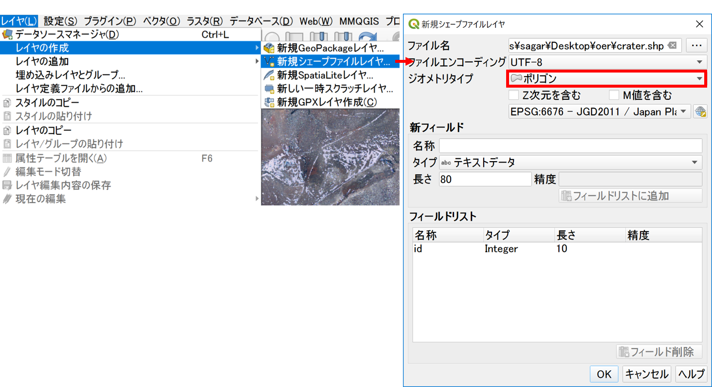

空間データの統合・修正
本教材は、「空間データの統合・修正」の実習用教材です。GISで用いられるラスタデータ（以下、ラスタという）とベクトルデータ（以下、ベクタという）の統合、修正、変換などデータの編集手法について解説しています。ソフトウェアは、無償で利用できるQGISを用いています。
Menu
以下に関心がある方は、GIS実習オープン教材を参照してください。
実習用データ
実習をはじめる前に、fujiをダウンロードしてください。座標変換などでgdalのエラーが出る場合、fuji_convertを使用してください（ラスタの座標変換のパートは、必ず一読してください）。
ラスタのモザイクとクリップ
以下では、ラスタデータ(ここでは、DEMを使用)の結合と任意範囲での切り抜きの解説を行っています。DEMは、Digital Elevation Modelの略であり、各セルごとに標高値を保持しているデータです。以下に従って、ダウンロードしたデータ（fuji）から任意の地域のデータを結合し、切り出して下さい。
ラスタを読み込むボタンをクリックして、fujiのラスタを全て読み込む。 
ラスタのモザイク
読み込んだ複数の.tifファイルは、ラスタ＞その他＞結合を選択し、以下の手順で一つにまとめる。通常、データが無い値は、0や-9999などを必要に応じて指定する（今回はデフォルトで実行）。
- 入力ファイルを選択する。
- 出力先とファイル入力する。
- ＯＫをクリックする。
以下のように、ラスタが結合できる。

Macメモ: モザイク
- fuji_convertを入手する
プロセッシング＞ツールボックスからMosaic raster layersを選択する。- Input Gridsですべてのラスタを選択、Interpolationを[1]Bilinear Interpolation、Cell sizeを30、保存先を決め実行する。
ラスタの座標変換
ラスタの座標変換は、ラスタ＞プロジェクション＞ワープ（再投影）から実行する。ここでは、以下の手順で実行する地理座標系から、平面直角座標系に変換する。
- 入力レイヤとして、結合したラスタを選択する。
- 変換元の座標系をEPSG:6668とする。
- 変換先の座標系をEPSG:6676とする。
- リサンプリングをバイリニアとする。
- Nodata値を0とする。
- 出力先とファイル名を指定する。
実行をクリックする。
ラスタのクリップ
ラスタ＞抽出＞範囲によるラスタクリップをクリックし、分析に必要な範囲のデータを抽出する。以下からは、結合、再投影したラスタ以外のレイヤを削除しておくと良い。

- 再投影したラスタを入力レイヤに指定する。
キャンパス上で領域を指定するをクリックし、地図をドラッグして範囲を指定する。- 出力先とファイル名を指定する。
- 実行をクリックする。
以下のように、ラスタがクリップできる。
Macメモ: ラスタのクリップ
プロセッシング＞ツールボックスからClip raster with polygonを選択し、結合したラスタと切り抜き用ポリゴン（land_condition.shp）を選択する。
ラスタの配色(値の分類)
以下では、抽出したデータの配色について解説する。DEMは、ラスタのセルごとに標高値を保持しているため、標高値による色分けができる。色分けは、以下の手順で実行する。 
- クリップしたラスタのプロパティ ＞ シンボル体系から、レンダリングタイプを単バンド疑似カラーにする。
- 最小を0、最大を4000とする。
- モードを等分位とし、クラスを9とする。
- 各値ラベルをクリックし、表示値を書き換える。
- OKをクリックする。
以下のように、標高値ごとに色わけができる。
以下のように、値の追加や編集によって、応用的に色分けすることも可能である（以下では、2500m以下を青色として表現した）。
等高線の抽出
作成したラスタデータは、各セルごとに標高値を保持している。そのため、セルの値を補間、等高線を作成することができる。以下では、等高線の作成は、ラスタ＞抽出＞等高線をクリックを選択し、以下の手順で実行する。

- 入力ファイルを選択する。
- 等高線の間隔を入力（今回は、200mとする）する。
- 出力先とファイルを入力する（ESRI Shapefileで保存する）。
- 実行をクリックする。
以下のように、200mの等高線が出力される。属性テーブルに、標高値が作成されていることも確認しておくと良い。

Macメモ: 等高線
プロセッシング＞ツールボックスからContour linesを選択する。- Gridに対象のラスタを指定し、Equidistanceで等高線の間隔を設定し、保存先を決め実行する。
ラスタをベクターに変換する
GISでは、処理の内容やデータの表現のため、ラスタデータやベクタデータを使い分けて使用します。以下では、ラスターデータをベクタデータ(ポリゴン)に変換する手法について解説しています。
ラスタをベクターに変換するため、ラスタ＞変換＞ポリゴン化（ラスタのベクタ化）をクリックし、以下の操作を行う。
- 入力ファイルを選択する。
- 作成するフィールドの名前を指定する。
- 出力先とファイルを入力する。
- 実行をクリックする。
以下のように、ラスタがベクタに変換されるので、DNフィールドの値で色分けする。

ポリゴンから特定の値（例：2500m以上の地域）を表示する
作成したポリゴンから、特定の値の地域の抽出しデータを表示する場合は、以下のように行う。レイヤの上で右クリックし、プロパティ>シンボロジーをクリックする。

「段階に分けられた」を選択し、カラムに「DN」値を指定する。
分類数を1にし、「分類」をクリックする。値をクリックし2500-最大値を入力し、OKをクリックする。
新規ベクターレイヤの追加
GISでは、データを自作をすることができます。以下では、新規にベクトルデータを作成する手法について解説しています。以下をはじめる前に、富士山登山同図（fuji_trails.tif）をQGISで読み込んで下さい。背景図が読み込みが完了したら、レイヤ＞レイヤの作成＞新規シェープファイルレイヤを選択し、以下の手順でレイヤの作成を行う。
- 保存先とファイル名を指定する。
- 作成したいレイヤのタイプを選択する。
- 座標系（今回は、EPSG:6676とする）を設定する。
- 新規ポイントに追加したい属性を
新フィールドから設定する。- 「名称」はカラム名、「タイプ」はデータ型にあわせる、「幅」と「精度」は入力するデータによる。
- 「タイプ」・・・値が整数ならInteger、小数を含むならReal、テキストならStringとなる。
- 「幅」＞桁数、「精度」＞表示する小数の位
- OKをクリックする。
※新規ベクターレイヤ追加では、ポイント、ライン、ポリゴンを同時に作成することができない。各レイヤを作成する場合ごとに、新規レイヤ作成が必要となる。
ポイントデータの作成と保存
以下では、富士山の登山道図をトレースして、山小屋のポイントを作成する。追加するポイントのIDと名前は表を参照する。
レイヤを選択し、編集モード切替をクリックする。
ポイント地物を追加するをクリックし、山小屋1の位置をクリックし、idと名前を入力する。この作業をid 12まで行う。

ポイントが追加できたら、レイヤ編集内容を保存（青枠）、編集モード切替（赤枠）の順でクリックしてデータを保存する。

ポイントの削除
以下では、ポイントデータを編集する手法について解説しています。ポイントの削除は、編集モードの状態で、選択ツールを用いて、削除したいレイヤを選択し、選択物を削除をクリックする。 
ポイントの移動
ポイントの移動は、頂点ツールをクリックして、移動したいレイヤの頂点をクリックし、任意の場所に移動する。

属性情報の編集
QGISでは、以下のように属性テーブルを開き、属性情報をクリックし、編集したい情報を入力することができる。 
ラインデータの作成
レイヤ＞レイヤの作成＞新規シェープファイルレイヤから、ポイントレイヤと同様の手法でラインデータを作成します。

以下では、頂点を連結させるため、設定＞オプション＞デジタイズから、デフォルトでスナップオプションを有効にするにチェックをつける。

ポイントデータを作成する要領で、登山道を何度もクリックしてなぞるようにラインデータを作成する。作成した線の最後の点で右クリックをするとダイアログが表示されるため、属性情報を入力する（以下では、１．富士宮口の登山道と２．お鉢巡りの道の順で作成します）。

お鉢巡りを作成する際に、富士宮口登山道の終点に点が重なるように作成する。最終点の周辺にカーソルを重ねるとピンク色になるので、その場所にお鉢巡りの始点と終点を重ねるように作成する。

ポリゴンデータの作成
以下では、ポリゴンデータの作成を解説するため、火口のポリゴンを新規に作成する。QGISビギナーズマニュアルに従って、ブラウザパネルを表示し、地理院タイル（簡易空中写真）をよみこむ

レイヤ＞レイヤの作成＞新規シェープファイルレイヤから、ポイントレイヤと同様の手法でポリゴンデータを作成する。

ラインデータを作成する要領で、火口のふちを何度もクリックしてなぞるようにポリゴンデータを作成する。作成した線の最後の点で右クリックをするとダイアログが表示されるため、属性情報を入力する。
この教材の課題ページ_空間データの統合・修正へ進む
ライセンスに関する注意事項
本教材で利用しているキャプチャ画像の出典やクレジットについては、その他のライセンスについてよりご確認ください。